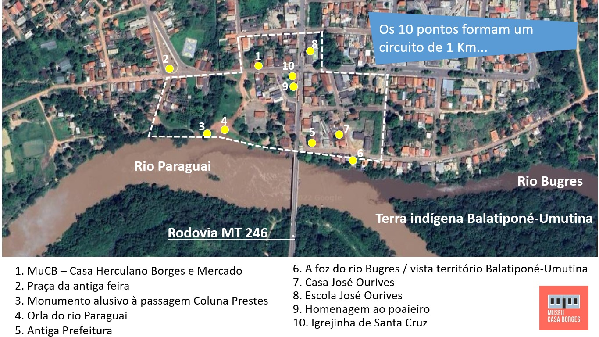

        <div class="texto_meio">
            <div id="meio">

              <br>
              <h5 class="texto-sub_titulo1"> Barra do Bugres: 80 anos </h5>
              <br>

                <p  class="recuo-primeira-linha justificado"> Circuito Histórico  </p>
                <p  class="recuo-primeira-linha justificado"> PONTOS DE MEMÓRIA DE BARRA DO BUGRES </p>
                <br>

                <p  class="recuo-primeira-linha justificado"> Há 80 anos, no dia 19 de abril de 1944, foi instituído o município de Barra do Bugres, com território desmembrado dos municípios de Diamantino, Cáceres e Rosário Oeste.   </p>
                <p  class="recuo-primeira-linha justificado"> A partir de 1878, com a chegada dos primeiros moradores, interessados na exploração da poaia, raiz medicinal de muito valor à época, tem início a formação da vila às margens do rio Paraguai, chamada então de Barra do Rio Bugres, distrito de Cáceres, que viria a se tornar a cidade de Barra do Bugres. O Museu Casa Borges está inserido no centro histórico da cidade, e o seu entorno faz parte da história que o museu quer contar por meio deste Circuito Histórico.  </p>
                <p  class="recuo-primeira-linha justificado"> São 10 pontos, num circuito de um quilometro, que conta parte da história da cidade. </p>


                <br>
                <div class="d-flex justify-content-center align-items-center">
                <figure class="imagem-paginas">                
                
                </figure>
                </div>
                <br>
                

                <br>
              <h5 class="texto-sub_titulo1"> 1. MuCB – Casa Herculano Borges (atual Museu Casa Borges) e mercado </h5>
              <br>

              <p  class="recuo-primeira-linha justificado"> Este conjunto arquitetônico, residência e mercado, que hoje abriga o Museu Casa Borges, pertenceu ao casal Andrelina dos Santos Borges e Herculano Borges, e tem uma relação muito próxima com a história de Barra do Bugres, já que seu proprietário era um comerciante da poaia, erva medicinal muito valiosa à época. Esta edificação foi construída na década de 1950.  </p>

              <br>
              <h5 class="texto-sub_titulo1"> 2. Praça da antiga feira livre </h5>
              <br>

                <p  class="recuo-primeira-linha justificado">Neste local acontecia a feira livre municipal, servindo ao núcleo urbano original da cidade. A feira livre funcionou de 1960 a 2003. </p>

                <br>
              <h5 class="texto-sub_titulo1"> 3. Monumento alusivo à passagem da Coluna Prestes</h5>
              <br>

                <p  class="recuo-primeira-linha justificado"> A escultura denominada “Homem de Ferro” faz referência à passagem da Coluna Prestes por Barra do Bugres, em 1926, onde ocorreu um confronto violento, causando a morte de 15 moradores da cidade. A construção da escultura data de 1995. </p>

                <br>
              <h5 class="texto-sub_titulo1"> 4. Orla do rio Paraguai</h5>
              <br>

                <p  class="recuo-primeira-linha justificado"> O Início da ocupação do território e criação da vila de Barra do Rio Bugres ocorreu por volta de 1878. O rio Paraguai tem papel fundamental na formação da cidade e no desenvolvimento da região. Era por seu leito que se fazia o transporte de pessoas, de mercadorias e de insumos naturais do primeiro ciclo econômico de Barra do Bugres. </p>

                <br>
              <h5 class="texto-sub_titulo1"> 5. Antiga Prefeitura de Barra do Bugres </h5>
              <br>

                <p  class="recuo-primeira-linha justificado"> Este edifício, onde hoje se encontra a Secretaria Municipal de Educação e Cultura, foi construído em 1953 para abrigar a sede da Prefeitura do recém-criado município de Barra do Bugres.</h5>
              <br>

              <h5 class="texto-sub_titulo1"> 6. Foz do rio Bugres/vista do território Balatiponé-Umutina </h5>
              <br>

                <p  class="recuo-primeira-linha justificado"> Aqui, deste ponto, pode-se observar o rio Bugres desaguando no rio Paraguai. A foz do rio, a barra do Rio Bugres, deu origem ao nome da cidade. Também pode-se ver, entre o rio Bugres e o Paraguai, o território Balatiponé-Umutina, povo que ocupava esta região antes do início da criação da cidade.
 </p>

                <br>
              <h5 class="texto-sub_titulo1"> 7. Casa José Ourives </h5>
              <br>

                <p  class="recuo-primeira-linha justificado"> A casa onde viveu o senhor José Ourives, um dos primeiros prefeitos do município, é um dos poucos exemplares da arquitetura de terra do início da formação da cidade.  </p>

                <br>
              <h5 class="texto-sub_titulo1"> 8. Antiga Escola Estadual José Ourives </h5>
              <br>

                <p  class="recuo-primeira-linha justificado"> Neste edifício, construído na década de 1950, funcionou, durante 70 anos, uma das mais importantes escolas de Barra do Bugres, desativada desde 2020.   </p>

                <br>
              <h5 class="texto-sub_titulo1"> 9. Homenagem ao poaieiro</h5>
              <br>

                <p  class="recuo-primeira-linha justificado"> A escultura (1995) é uma homenagem ao trabalhador que foi fundamental para o desenvolvimento inicial da cidade de Barra do Bugres: o poaieiro. Esse se embrenhava na mata por meses, coletando a poaia, a raiz medicinal responsável pela vinda dos exploradores para a região.   </p>

                <br>
              <h5 class="texto-sub_titulo1"> 10. Igrejinha de Santa Cruz</h5>
              <br>

                <p  class="recuo-primeira-linha justificado"> Construída em 1936, foi a primeira igreja de Barra do Bugres, mas após a construção da Igreja Matriz, ela permaneceu desocupada, sendo restaurada em 2022.</p>

                

              

                                
                </div>
        </div>
   